Бог XX★5, все три умения XX★5, полный набор артефактов. Числа урона и лечения — в процентах от атаки бога (100 = одна атака). Ниже каждого умения — как оно выглядит на старте (I★1), пометка, что не так, предложение и поле для вашего комментария. Комментарии сохраняются сами.
Каждая из 100 ступеней умения даёт ровно +2% силы. Сроки и шансы на старте — ровно половина от максимума. Значит всё, что умеет бог, открыто с первой звезды; прокачка только растягивает цифры.
Предложение: дешёвые ступени дают мало, дорогие — много (зелёная кривая), а на X и XX открываются новые свойства умения.
Бонус артефакта почти у всех один и тот же. Предложение: у каждого бога свой бонус по теме умения (Кощей — лишнее бессмертие, Хель — щит воскрешённому и т. п.).
59 сроков из 115 на максимуме — 5 сек и меньше (40 — до 4 сек). На старте они вдвое короче: оглушение 2 сек, усиление 2,5 сек. Предложение: слабее, но дольше — старт от 4–6 сек, максимум 10–15 сек.
Ослабление врагов 70% на максимуме уже у 9 умений (Геката, Миктлантекутли, Велес, Персефона, Кицунэ) — дальше прокачка ничего не даёт. Броня стража на XX — 38% до бонусов, с бонусами существ и наборов быстро доходит до 60%. Вместе: удар проходит на 12% (0,4 × 0,3).
Средний бой 5×5 на максимуме — 80 сек (расчёт 11.11, 288 боёв на бога), ярость включается с 75-й секунды: бои заканчивает ярость, а не умения. Предложение: ослабления слабее (20–40%) и дольше; один общий потолок снижения урона; щиты 25–50% вместо 60–80%.
Сейчас оно даёт всем богам одно и то же: атаку, шанс и силу крита, шанс супера и ульты (до 15%).
Предложение: зачарование умения открывает у этого умения новое свойство на 5, 10, 15 и 20 уровне — то, что в карточках ниже стоит на ступенях «X» и «XX».
Скучные — в основном ульты и суперы «атакует каждого врага на N» без второго эффекта.
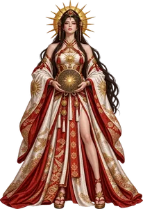
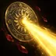
Атакует на 298 урона и соседнего врага на 149 урона.
У цели 15 сек на 20% меньше шанс критического удара.
Атакует на 100 урона и соседнего врага на 50 урона.
У цели 7,5 сек на 10% меньше шанс критического удара.
Бог восстанавливает здоровье на 15% нанесённого урона.
Снижение шанса крита врага — почти незаметно.
Заменить: ослепление — 20% атак цели мимо на 8 сек.
Атакует трёх случайных врагов на 447 урона.
Атакует трёх случайных врагов на 150 урона.
Бог восстанавливает здоровье на 25% нанесённого урона.
Удар по трём случайным.
Зеркало Ята: отражает следующий супер врага обратно (8 сек ожидания).
Атакует каждого врага на 620 урона.
Атакует каждого врага на 208 урона.
Бог восстанавливает здоровье на 25% нанесённого урона.
Удар по всем.
Выход из грота: 10 сек свет — союзники +20% урона, враги −20% меткости.
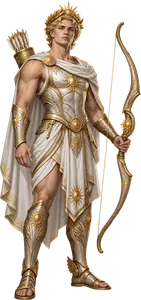
Атакует на 298 урона.
С шансом 20% стрела прошивает цель и бьёт соседнего врага.
Атакует на 100 урона.
С шансом 10% стрела прошивает цель и бьёт соседнего врага.
Бог восстанавливает здоровье на 15% нанесённого урона.
Прострел соседа 10→20%.
XX: каждый пятый выстрел прошивает весь ряд.
Атакует самого раненого врага на 1 188 урона.
По цели со щитом удар на 20% сильнее.
Атакует самого раненого врага на 399 урона.
По цели со щитом удар на 20% сильнее.
Бог восстанавливает здоровье на 25% нанесённого урона.
Удар по раненому +20% по щиту.
X: снимает щит. XX: убийство супером сбрасывает его подготовку атаки.
Атакует одного врага на 1 714 урона.
Атакует одного врага на 575 урона.
Бог восстанавливает здоровье на 25% нанесённого урона.
Один удар — ничего кроме цифры.
Колесница: проезжает по ряду, поджигает 8 сек. XX: огонь лечит союзников рядом.
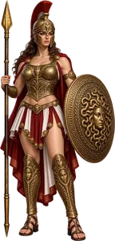
Атакует на 298 урона.
С шансом 20% Афина 10 сек возвращает нападающему 30% урона от его ударов.
Атакует на 100 урона.
С шансом 10% Афина 5 сек возвращает нападающему 15% урона от его ударов.
Бог восстанавливает здоровье на 15% нанесённого урона.
Отражение урона — хорошо.
Старт: отражает 10% 6 сек. XX: отражение на всех союзников рядом.
Даёт каждому союзнику щит на 25% его макс. здоровья.
Одному случайному союзнику щит двойной.
Даёт каждому союзнику щит на 8,4% его макс. здоровья.
Одному случайному союзнику щит двойной.
Щит прочнее на 40%.
Щит всем 8→25%.
X: двойной щит получает самый раненый (не случайный). XX: при поломке щита — оглушение нападавшего 1 сек.
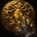
Обращает всех врагов в камень на 4 сек.
Окаменевшие получают на 25% больше урона.
Обращает всех врагов в камень на 2 сек.
Окаменевшие получают на 25% больше урона.
Контроль длится дольше на 40%.
Окаменение всех 2→4 сек.
Старт: камень 1 враг. X: ряд. XX: все враги, окаменевшие получают +40%.
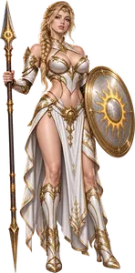
Усиливает союзника на 128% урона на 7 сек и атакует на 89 урона.
Если благословение уже у всех, атакует на 427 урона.
С шансом 20% случайный союзник 7 сек наносит на 59,6% больше урона.
Усиливает союзника на 43% урона на 3,5 сек и атакует на 30 урона.
Если благословение уже у всех, атакует на 143 урона.
С шансом 10% случайный союзник 3,5 сек наносит на 20% больше урона.
Усиление союзников сильнее на 30%.
Благословение 128% на 7 сек.
+40% на 12 сек.
Даёт каждому союзнику щит на 45% его макс. здоровья.
Самый сильный союзник 5 сек наносит на 220,8% больше урона.
Даёт каждому союзнику щит на 15,1% его макс. здоровья.
Самый сильный союзник 2,5 сек наносит на 74,1% больше урона.
Щит прочнее на 40%.
Щит всем + сильнейшему +221% на 5 сек.
Щит 30%, +60% на 12 сек.
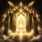
Следующие 4 сек погибающие союзники сражаются ещё 3 сек, не получая урона, затем уходят навсегда.
Действует на каждого бога один раз за бой.
Следующие 2 сек погибающие союзники сражаются ещё 3 сек, не получая урона, затем уходят навсегда.
Действует на каждого бога один раз за бой.
Эффект длится дольше на 40%.
Павшие сражаются ещё 3 сек — интересно.
Окно 2 → 8 сек, бой павших 3 → 6 сек.
Атакует на 298 урона.
С шансом 20% наносит богам Тьмы на 50% больше урона.
Атакует на 100 урона.
С шансом 10% наносит богам Тьмы на 50% больше урона.
Бог восстанавливает здоровье на 15% нанесённого урона.
Шанс +50% по Тьме.
Всегда +25% по Тьме, XX +50%.
Атакует цель на 1 061 урона.
Лечение цели 5 сек слабее на 90%.
Атакует цель на 356 урона.
Лечение цели 2,5 сек слабее на 45,7%.
Бог восстанавливает здоровье на 25% нанесённого урона.
Запрет лечения 90% — хорошо.
Срок 5 → 10 сек.
Атакует цель на 1 836 урона.
По богам Тьмы удар в полтора раза сильнее.
Атакует цель на 616 урона.
По богам Тьмы удар в полтора раза сильнее.
Бог восстанавливает здоровье на 25% нанесённого урона.
Один удар, по Тьме ×1,5.
XX: цель Тьмы не может воскреснуть.
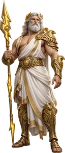
Атакует на 298 урона.
Разряд перескакивает на 1–3 других врагов, нанося им половину урона.
С шансом 20% оглушает цель на 4 сек.
Атакует на 100 урона.
Разряд перескакивает на 1–3 других врагов, нанося им половину урона.
С шансом 10% оглушает цель на 2 сек.
Бог восстанавливает здоровье на 15% нанесённого урона.
Цепная молния — хорошо.
Старт: перескок на 1. X: на 2. XX: на 3 и оглушение 1 сек на последнем.
Атакует каждого врага на 229 урона.
Каждого врага с шансом 20% оглушает на 4 сек.
Атакует каждого врага на 77 урона.
Каждого врага с шансом 20% оглушает на 2 сек.
Контроль длится дольше на 40%.
Удар по всем + шанс оглушения 20%.
Шанс 15% → 50% к XX, срок 3 сек постоянный.
Атакует каждого врага на 528 урона.
Атакует каждого врага на 177 урона.
Бог восстанавливает здоровье на 25% нанесённого урона.
Только удар по всем.
Титаномахия: 3 волны молний по 4 сек, каждая сильнее. XX: оглушает выживших.
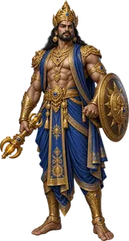
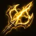
Атакует на 298 урона и соседнего врага на 149 урона.
С шансом 15% бьёт цель второй раз и задевает её соседа на половину урона.
Атакует на 100 урона и соседнего врага на 50 урона.
С шансом 7,5% бьёт цель второй раз и задевает её соседа на половину урона.
Бог восстанавливает здоровье на 15% нанесённого урона.
Двойной удар 7,5→15%.
XX: второй удар оглушает на 1 сек.
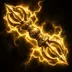
Атакует самого сильного врага, минуя стража, на 1 304 урона.
Атакует самого сильного врага, минуя стража, на 438 урона.
Бог восстанавливает здоровье на 25% нанесённого урона.
Удар по сильнейшему, минуя стража.
Ваджра: снижает защиту цели на 20% на 10 сек. XX: пробивает щит.
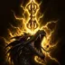
Атакует врага на 1 991 урона.
Атакует врага на 668 урона.
Бог восстанавливает здоровье на 25% нанесённого урона.
Один удар.
Убийство Вритры: удар + 10 сек отряд бьёт цель на 30% сильнее. XX: при убийстве — повтор по новой цели.
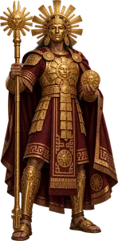
Лечит союзника с наименьшим здоровьем на 775, если оно ниже 75%, и атакует на 89 урона.
Если раненых нет, атакует на 298 урона.
С шансом 20% лечение на 50% сильнее.
Лечит союзника с наименьшим здоровьем на 260, если оно ниже 75%, и атакует на 30 урона.
Если раненых нет, атакует на 100 урона.
С шансом 10% лечение на 50% сильнее.
Лечение сильнее на 30%.
Лечение + шанс +50%.
XX: перелечивание становится щитом.
Чередует два действия.
Восход лечит каждого союзника на 450.
В полдень отряд 10 сек наносит на 28,8% больше урона.
Чередует два действия.
Восход лечит каждого союзника на 151.
В полдень отряд 5 сек наносит на 9,7% больше урона.
Лечение сильнее на 40%.
Чередование лечения и усиления — интересно.
Старт: только Восход. X: открывается Полдень. XX: оба сразу.
Ждёт, пока здоровье союзника упадёт ниже 40%, но не дольше 10 сек.
Лечит каждого союзника на 55,1% макс. здоровья.
Даёт каждому союзнику щит на 16,5% его макс. здоровья.
Ждёт, пока здоровье союзника упадёт ниже 40%, но не дольше 10 сек.
Лечит каждого союзника на 18,5% макс. здоровья.
Даёт каждому союзнику щит на 5,6% его макс. здоровья.
Лечение сильнее на 40%.
Копия ульты Ра (лечение + щит при опасности).
Сделать отличие: Золотой полдень — 10 сек отряд неуязвим к контролю.
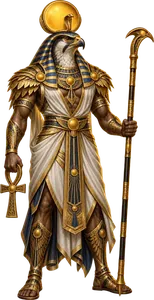
Лечит союзника с наименьшим здоровьем на 646, если оно ниже 75%, и атакует на 89 урона.
Если раненых нет, атакует на 249 урона.
С шансом 20% лечение даёт союзнику ещё и щит на 29,1% макс. здоровья.
Лечит союзника с наименьшим здоровьем на 217, если оно ниже 75%, и атакует на 30 урона.
Если раненых нет, атакует на 83 урона.
С шансом 10% лечение даёт союзнику ещё и щит на 9,8% макс. здоровья.
Лечение сильнее на 30%.
Лечение + шанс щита.
XX: щит на весь отряд при лечении ниже 30%.
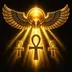
Лечит каждого союзника на 476.
Самого раненого союзника лечит на 20% больше.
Лечит каждого союзника на 160.
Самого раненого союзника лечит на 20% больше.
Лечение сильнее на 40%.
Лечение всех + раненому больше.
X: снимает 1 проклятие. XX: снимает все проклятия.
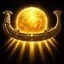
Ждёт, пока здоровье союзника упадёт ниже 40%, но не дольше 10 сек.
Лечит каждого союзника на 49,7% макс. здоровья.
Даёт каждому союзнику щит на 14,9% его макс. здоровья.
Ждёт, пока здоровье союзника упадёт ниже 40%, но не дольше 10 сек.
Лечит каждого союзника на 16,7% макс. здоровья.
Даёт каждому союзнику щит на 5% его макс. здоровья.
Лечение сильнее на 40%.
Ждёт опасности — умная ульта.
Старт: лечит 20%. XX: + неуязвимость 2 сек самому раненому.
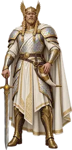
Атакует на 298 урона.
С шансом 15% удар задевает ещё одного случайного врага.
Атакует на 100 урона.
С шансом 7,5% удар задевает ещё одного случайного врага.
Бог восстанавливает здоровье на 15% нанесённого урона.
Задевает ещё одного с шансом.
XX: каждый 3-й удар — по двум.
Атакует четырёх случайных врагов на 405 урона.
Отряд 7 сек наносит на 49,9% больше урона.
Остальные союзники почти сразу атакуют общим залпом.
Атакует четырёх случайных врагов на 136 урона.
Отряд 3,5 сек наносит на 16,7% больше урона.
Остальные союзники почти сразу атакуют общим залпом.
Бог восстанавливает здоровье на 25% нанесённого урона.
Залп всех союзников — интересно.
Старт: залп без усиления. XX: усиление 7 сек → 12 сек.
Отряд 5 сек наносит на 124,7% больше урона.
Отряд 2,5 сек наносит на 41,9% больше урона.
Усиление союзников сильнее на 40%.
Только усиление урона 125% на 5 сек — слишком сильное и короткое.
Зов Рагнарёка: +40% урона на 15 сек; XX — +60% и отряд не боится контроля.
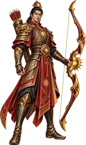
Атакует на 298 урона.
Каждая десятая стрела наносит втрое больше урона.
Атакует на 100 урона.
Каждая десятая стрела наносит втрое больше урона.
Бог восстанавливает здоровье на 15% нанесённого урона.
Каждая 10-я стрела ×3.
X: каждая 7-я. XX: каждая 5-я.
Четыре раза атакует случайных врагов на 358 урона.
Четыре раза атакует случайных врагов на 120 урона.
Бог восстанавливает здоровье на 25% нанесённого урона.
4 случайных выстрела.
Девять солнц: 9 стрел, каждая сжигает 5% защиты цели на 10 сек.
Атакует врага на 1 688 урона.
Атакует врага на 566 урона.
Бог восстанавливает здоровье на 25% нанесённого урона.
Один удар.
Падение солнц: по солнцу на каждого врага; XX — враг без солнца получает два.
Атакует на 298 урона.
Его удар проходит сквозь уклонение, двойников и невидимость.
Небесный пёс раз в 4 сек кусает задний ряд врагов.
Атакует на 100 урона.
Его удар проходит сквозь уклонение, двойников и невидимость.
Небесный пёс раз в 4 сек кусает задний ряд врагов.
Бог восстанавливает здоровье на 15% нанесённого урона.
Пёс + удар сквозь уклонение.
Оставить.
Атакует цель на 874 урона.
Снимает с цели щиты и благословения.
Атакует цель на 293 урона.
Снимает с цели щиты и благословения.
Бог восстанавливает здоровье на 25% нанесённого урона.
Снимает щиты и благословения.
Оставить.
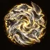
Повторяет последний супер-удар врагов по его отряду с силой Эрлана.
Если такого удара не было, атакует каждого врага на 303 урона.
Повторяет последний супер-удар врагов по его отряду с силой Эрлана.
Если такого удара не было, атакует каждого врага на 102 урона.
Бог восстанавливает здоровье на 25% нанесённого урона.
Повторяет последний вражеский супер.
XX: повторяет два последних.
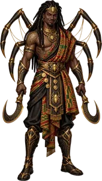
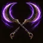
Атакует на 298 урона.
С шансом 15% цель пропускает следующее действие.
Атакует на 100 урона.
С шансом 7,5% цель пропускает следующее действие.
Бог восстанавливает здоровье на 15% нанесённого урона.
Пропуск действия 7,5→15%.
Старт 10%. XX: пропустивший действие теряет и благословение.
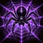
Трижды атакует случайных врагов, минуя стражей, на 282 урона.
Все враги 10 сек наносят на 36,2% меньше урона.
Трижды атакует случайных врагов, минуя стражей, на 95 урона.
Все враги 5 сек наносят на 12,1% меньше урона.
Бог восстанавливает здоровье на 25% нанесённого урона.
Три удара + слабое ослабление.
X: удары выбирают цели без щита. XX: каждый удар крадёт 10% заряда ульты.
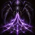
Атакует каждого врага на 244 урона.
Отряд лечится на нанесённый урон.
Крадёт у врагов щиты, себе не больше 30% своего макс. здоровья.
Крадёт у врагов лучшее благословение, не дольше чем на 6 сек.
Атакует каждого врага на 82 урона.
Отряд лечится на нанесённый урон.
Крадёт у врагов щиты, себе не больше 30% своего макс. здоровья.
Крадёт у врагов лучшее благословение, не дольше чем на 6 сек.
Бог восстанавливает здоровье на 25% нанесённого урона.
Кража щитов и благословений — живая механика.
Старт: крадёт только щит. X: + благословение. XX: краденое получает весь отряд.
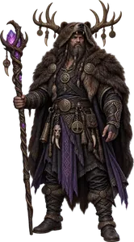
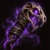
Атакует на 442 урона.
С шансом 15% цель промахивается следующей атакой.
Атакует на 148 урона.
С шансом 7,5% цель промахивается следующей атакой.
Бог восстанавливает здоровье на 15% нанесённого урона.
Промах с шансом.
XX: промахнувшийся теряет заряд ульты.
Даёт себе щит на 60% макс. здоровья.
Следующие 15,6 сек его удары задевают и соседей цели.
Даёт себе щит на 20,1% макс. здоровья.
Следующие 12,6 сек его удары задевают и соседей цели.
Щит прочнее на 40%.
Щит + удары по соседям 12,6→15,6 сек — хорошее длинное состояние.
Щит 30→50%.
Воскрешает павшего союзника с 100% здоровья.
Если павших нет, все враги 5 сек наносят на 70% меньше урона.
Воскрешает павшего союзника с 100% здоровья.
Если павших нет, все враги 2,5 сек наносят на 31,3% меньше урона.
Ослабление врагов сильнее на 40%.
Воскрешение 100% уже на старте.
Старт: 30%. XX: 100%. Ослабление 20→40% на 6→12 сек.
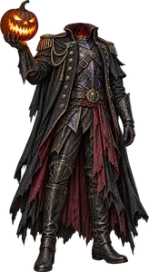
Атакует на 298 урона.
С шансом 20% поджигает цель на 6 сек по 89 урона в секунду.
Атакует на 100 урона.
С шансом 10% поджигает цель на 3 сек по 30 урона в секунду.
Бог восстанавливает здоровье на 15% нанесённого урона.
Поджог с шансом.
XX: поджог всегда.
Проносится сквозь ряд врагов и 4 сек неуязвим.
Поджигает трёх случайных врагов на 6 сек по 160 урона в секунду.
Проносится сквозь ряд врагов и 2 сек неуязвим.
Поджигает трёх случайных врагов на 3 сек по 54 урона в секунду.
Урон со временем сильнее на 50%.
Неуязвимость + поджог трёх.
Неуязвимость 3 сек со старта.
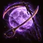
Атакует каждого врага на 491 урона.
Кто падёт в ближайшую секунду, переродится на 10 сек позже.
Атакует каждого врага на 165 урона.
Кто падёт в ближайшую секунду, переродится на 10 сек позже.
Бог восстанавливает здоровье на 25% нанесённого урона.
Удар по всем + задержка перерождения на 1 сек окна.
Окно 1 сек слишком мало: 6 сек со старта.
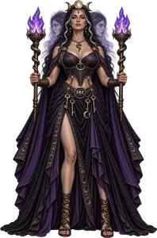
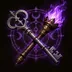
Ослабляет врага на 70% урона на 5 сек и атакует его на 89 урона.
Если проклятие уже у всех, атакует на 298 урона.
С шансом 25% проклятие перескакивает ещё на одного врага.
Ослабляет врага на 30% урона на 2,5 сек и атакует его на 30 урона.
Если проклятие уже у всех, атакует на 100 урона.
С шансом 12,5% проклятие перескакивает ещё на одного врага.
Ослабление врагов сильнее на 30%.
Ослабление 70% упирается в потолок уже к середине прокачки — дальше рост пустой.
Ослабление держать 20→40%, зато срок 6→12 сек. XX: перескок на второго врага всегда.
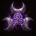
Атакует каждого врага на 380 урона.
Каждый враг получает одну случайную печать.
Слабость снижает его урон на 70% на 5 сек.
Немота 7 сек запрещает ему супер-удар и ульту.
Хрупкость увеличивает получаемый им урон на 21,8% на 10 сек.
Атакует каждого врага на 128 урона.
Каждый враг получает одну случайную печать.
Слабость снижает его урон на 43,6% на 2,5 сек.
Немота 3,5 сек запрещает ему супер-удар и ульту.
Хрупкость увеличивает получаемый им урон на 10,9% на 5 сек.
Бог восстанавливает здоровье на 25% нанесённого урона.
Случайная печать интересна, но слабость 70% снова в потолке.
Старт: 1 печать. X: 2 печати. XX: все 3 печати на каждом враге.
Атакует каждого врага на 439 урона.
Все враги 5 сек наносят на 70% меньше урона.
Атакует каждого врага на 147 урона.
Все враги 2,5 сек наносят на 38,2% меньше урона.
Бог восстанавливает здоровье на 25% нанесённого урона.
Удар по всем + ослабление 70% на 5 сек — дублирует супер.
Перекрёсток: 8 сек враги атакуют случайную цель (в т.ч. своих). Сила растёт сроком.
Атакует на 298 урона.
С шансом 25% удар лечит Дракулу на нанесённый урон.
Атакует на 100 урона.
С шансом 12,5% удар лечит Дракулу на нанесённый урон.
Бог восстанавливает здоровье на 15% нанесённого урона.
Вампиризм с шансом.
XX: лишнее лечение становится щитом.
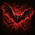
Четыре раза атакует случайных врагов на 511 урона.
Каждый удар лечит его на нанесённый урон.
Четыре раза атакует случайных врагов на 172 урона.
Каждый удар лечит его на нанесённый урон.
Бог восстанавливает здоровье на 25% нанесённого урона.
4 удара с лечением.
XX: стая на 8 сек кусает сама.
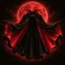
Дракула 7 сек атакует на 44% чаще.
Каждый его удар 5 сек лечит его на 88% нанесённого урона.
Все враги 7 сек наносят на 52,4% меньше урона.
Дракула 3,5 сек атакует на 22% чаще.
Каждый его удар 2,5 сек лечит его на 44% нанесённого урона.
Все враги 3,5 сек наносят на 17,6% меньше урона.
Ослабление врагов сильнее на 40%.
Ускорение, вампиризм, ослабление — богатая ульта.
Сроки 7 → 12 сек, силу снизить.
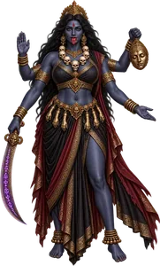
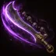
Атакует на 298 урона.
Каждый удар подряд по одной цели сильнее на 10%, не больше чем на 50%.
Атакует на 100 урона.
Каждый удар подряд по одной цели сильнее на 10%, не больше чем на 50%.
Бог восстанавливает здоровье на 15% нанесённого урона.
Нарастание урона по одной цели — хорошо.
Шаг 10% и потолок 50% → XX: потолок 100%.
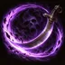
Пять раз атакует самого раненого врага на 209 урона.
Пять раз атакует самого раненого врага на 70 урона.
Бог восстанавливает здоровье на 25% нанесённого урона.
5 ударов по раненому.
XX: при убийстве остаток ударов уходит в следующего.
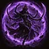
Атакует каждого врага на 578 урона.
Атакует каждого врага на 194 урона.
Бог восстанавливает здоровье на 25% нанесённого урона.
Удар по всем.
Пляска Кали: 8 сек каждое убийство повторяет пляску. XX: + Кали неуязвима к контролю.
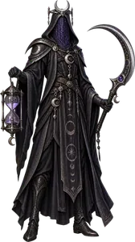
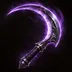
Атакует на 298 урона и соседнего врага на 149 урона.
С шансом 15% усыпляет цель на 4 сек.
По спящим его обычный удар втрое сильнее.
Атакует на 100 урона и соседнего врага на 50 урона.
С шансом 7,5% усыпляет цель на 2 сек.
По спящим его обычный удар втрое сильнее.
Бог восстанавливает здоровье на 15% нанесённого урона.
Сон + тройной урон по спящим — связка.
Оставить; сон 3 сек со старта.
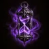
Усыпляет всех врагов на 4 сек, урон будит.
По спящим обычный удар Кошмара втрое сильнее.
Усыпляет всех врагов на 2 сек, урон будит.
По спящим обычный удар Кошмара втрое сильнее.
Контроль длится дольше на 40%.
Сон всех — связка с обычным ударом.
XX: спящие получают кошмар — урон каждую секунду.
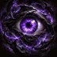
Усыпляет всех врагов на 4 сек.
Подготовка атаки у всех врагов откатывается на 20%.
Атакует одного спящего врага на 2 997 урона.
Усыпляет всех врагов на 2 сек.
Подготовка атаки у всех врагов откатывается на 20%.
Атакует одного спящего врага на 1 006 урона.
Контроль длится дольше на 40%.
Сон + удар по одному.
XX: удар по каждому спящему.
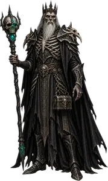
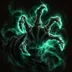
Атакует на 298 урона и соседнего врага на 149 урона.
Трижды за бой переживает смертельный удар, оставаясь с 25% здоровья.
Атакует на 100 урона и соседнего врага на 50 урона.
Трижды за бой переживает смертельный удар, оставаясь с 25% здоровья.
Бог восстанавливает здоровье на 15% нанесённого урона.
Три бессмертия сразу на старте — прокачке нечего открывать.
Старт: 10% шанс пережить смерть 1 раз. X: 1 гарантированное. XX: 2 гарантированных + шанс 30% на третье.
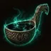
Атакует трёх случайных врагов на 316 урона.
Лечит себя на весь нанесённый урон.
Атакует трёх случайных врагов на 106 урона.
Лечит себя на весь нанесённый урон.
Бог восстанавливает здоровье на 25% нанесённого урона.
Удар по трём + лечение.
XX: лишнее лечение копит «иглу» — +1 бессмертие за бой.
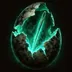
Кощей неуязвим 4 сек.
Атакует каждого врага на 234 урона.
Кощей неуязвим 2 сек.
Атакует каждого врага на 79 урона.
Бог восстанавливает здоровье на 25% нанесённого урона.
Неуязвимость 2→4 сек + удар.
XX: если Кощей пал в ульту — возвращает ему одно бессмертие.
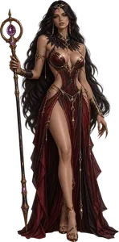
Усиливает союзника на 143% урона на 7 сек и атакует на 89 урона.
Если благословение уже у всех, атакует на 477 урона.
Её благословение 10 сек даёт союзнику вампиризм 25%.
С шансом 20% благословлённый союзник отражает первый контроль во врага.
Усиливает союзника на 48% урона на 3,5 сек и атакует на 30 урона.
Если благословение уже у всех, атакует на 160 урона.
Её благословение 5 сек даёт союзнику вампиризм 12,5%.
С шансом 10% благословлённый союзник отражает первый контроль во врага.
Усиление союзников сильнее на 30%.
Благословение + вампиризм + отражение контроля — богато.
Сила 143% слишком высокая, срок 7 сек: +50% на 12 сек.
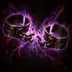
Снимает с отряда контроль и проклятия.
Отряд 5 сек наносит на 149% больше урона.
Всё это время контроль на союзниках отскакивает во врага.
Снимает с отряда контроль и проклятия.
Отряд 2,5 сек наносит на 50% больше урона.
Всё это время контроль на союзниках отскакивает во врага.
Усиление союзников сильнее на 40%.
Очищение + отражение контроля.
Срок 5 → 10 сек, усиление 149% → 50%.
Самый сильный враг 4 сек сражается за её отряд в полную силу.
Этот враг 10 сек получает на 37,5% больше урона.
Самый сильный враг 2 сек сражается за её отряд в полную силу.
Этот враг 5 сек получает на 18,8% больше урона.
Ослабление врагов сильнее на 40%.
Переманивает врага — сильная идея.
Старт 3 сек, XX 8 сек.
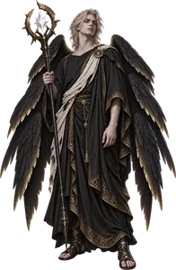
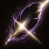
Атакует на 298 урона и соседнего врага на 149 урона.
С шансом 20% благословение цели становится проклятием той же силы.
Атакует на 100 урона и соседнего врага на 50 урона.
С шансом 10% благословение цели становится проклятием той же силы.
Бог восстанавливает здоровье на 15% нанесённого урона.
Благословение врага → проклятие.
Оставить; XX — шанс 30%.
Атакует цель на 1 855 урона.
Благословение цели становится проклятием той же силы.
Атакует цель на 622 урона.
Благословение цели становится проклятием той же силы.
Бог восстанавливает здоровье на 25% нанесённого урона.
Удар + переворот благословения цели.
XX: переворачивает и щит в урон.
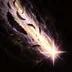
Атакует каждого врага на 642 урона.
Благословения всех врагов становятся проклятиями той же силы.
Атакует каждого врага на 215 урона.
Благословения всех врагов становятся проклятиями той же силы.
Бог восстанавливает здоровье на 25% нанесённого урона.
Переворот всех благословений.
Оставить.
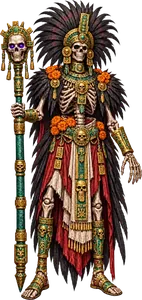
Ослабляет врага на 70% урона на 5 сек и атакует его на 89 урона.
Если проклятие уже у всех, атакует на 298 урона.
С шансом 20% замораживает цель на 4 сек.
Ослабляет врага на 30% урона на 2,5 сек и атакует его на 30 урона.
Если проклятие уже у всех, атакует на 100 урона.
С шансом 10% замораживает цель на 2 сек.
Ослабление врагов сильнее на 30%.
Ослабление 70% в потолке; заморозка 2→4 сек.
Ослабление 20→40% на 6→12 сек; заморозка 3 сек со старта, XX — на соседа тоже.
Атакует каждого врага на 302 урона.
Все враги 5 сек наносят на 70% меньше урона.
Павший в ближайшие 6 сек не перерождается.
Атакует каждого врага на 101 урона.
Все враги 2,5 сек наносят на 40,1% меньше урона.
Павший в ближайшие 3 сек не перерождается.
Бог восстанавливает здоровье на 25% нанесённого урона.
Запрет перерождения — редкая механика, хорошая.
Запрет 6 сек со старта; XX — до конца боя для одного павшего.
Атакует каждого врага на 923 урона.
Атакует каждого врага на 310 урона.
Бог восстанавливает здоровье на 25% нанесённого урона.
Просто удар по всем.
Девятый круг: враги с <25% здоровья умирают, их души лечат отряд. Порог 10% → 25% к XX.
Атакует на 298 урона и соседнего врага на 149 урона.
С шансом 20% лечение цели 7 сек слабее на 50%.
Атакует на 100 урона и соседнего врага на 50 урона.
С шансом 10% лечение цели 3,5 сек слабее на 25%.
Бог восстанавливает здоровье на 15% нанесённого урона.
Шанс и срок просто удваиваются от старта к максимуму.
Старт: −25% лечения цели 4 сек. X: эффект на всех, по кому прошёл удар с соседом. XX: павший под этим эффектом не перерождается 10 сек.
Атакует цель на 2 722 урона.
Оглушает цель на 4 сек.
Атакует цель на 914 урона.
Оглушает цель на 2 сек.
Контроль длится дольше на 40%.
Одиночный удар + оглушение 2→4 сек: короткий контроль.
Старт: оглушение 3 сек. X: оглушённый получает на 20% больше урона от Тьмы. XX: оглушение перескакивает на второго врага.
Воскрешает павшего союзника с 100% здоровья.
Если павших нет, душа 20 сек ждёт павшего и воскрешает его.
Если за это время никто не пал, даёт каждому союзнику щит на 63,6% макс. здоровья.
Воскрешает павшего союзника с 71,1% здоровья.
Если павших нет, душа 20 сек ждёт павшего и воскрешает его.
Если за это время никто не пал, даёт каждому союзнику щит на 21,3% макс. здоровья.
Щит прочнее на 40%.
Хорошая идея (воскрешение или душа), но 71% здоровья уже на старте.
Старт: воскрешает с 30%. X: 60% и щит. XX: 100% + воскрешённый 6 сек неуязвим.
Атакует на 298 урона и соседнего врага на 149 урона.
Цель 20 сек атакует на 10% медленнее.
Атакует на 100 урона и соседнего врага на 50 урона.
Цель 10 сек атакует на 5% медленнее.
Бог восстанавливает здоровье на 15% нанесённого урона.
Замедление 5→10% на 10→20 сек — длинный слабый эффект, как вы хотели.
Можно оставить; XX: замедление складывается до 3 раз.
Атакует каждого врага на 755 урона.
Атакует каждого врага на 253 урона.
Бог восстанавливает здоровье на 25% нанесённого урона.
Только удар по всем.
Дыхание дракона: оставляет водяную воронку на 8 сек — замедление 20%.
Призывает лазурного дракона на 10 сек.
Атака дракона равна 238,4% от атаки бога, но не ниже собственной атаки существа.
Если дракон ещё жив, срок продлевается.
Призывает лазурного дракона на 5 сек.
Атака дракона равна 80% от атаки бога, но не ниже собственной атаки существа.
Если дракон ещё жив, срок продлевается.
Эффект длится дольше на 40%.
Призыв дракона — хорошо.
Старт: дракон 6 сек. X: 10 сек. XX: два дракона.
Атакует на 298 урона.
Каждая третья стрела бьёт дважды.
Атакует на 100 урона.
Каждая третья стрела бьёт дважды.
Бог восстанавливает здоровье на 15% нанесённого урона.
Каждая третья стрела дважды — понятно и ровно.
Старт: каждая 4-я. X: 3-я. XX: 2-я.
Делит 1 344 урона поровну между живыми врагами, каждому не меньше 269.
Каждая стрела с шансом 25% критическая.
Делит 451 урона поровну между живыми врагами, каждому не меньше 90.
Каждая стрела с шансом 25% критическая.
Бог восстанавливает здоровье на 25% нанесённого урона.
Делит урон между врагами.
XX: при одном враге — критический удар всегда.
Атакует цель на 1 551 урона.
Атакует цель на 520 урона.
Бог восстанавливает здоровье на 25% нанесённого урона.
Один удар.
Охота: метка 10 сек — по цели все бьют на 30% сильнее; при её смерти Артемида повторяет ульту.
Атакует на 451 урона.
С шансом 15% все враги 4 сек атакуют только его.
Атакует на 151 урона.
С шансом 7,5% все враги 2 сек атакуют только его.
Бог восстанавливает здоровье на 15% нанесённого урона.
Провокация всех с шансом.
XX: провокация + щит себе.
Удары по остальным союзникам 4 сек уходят в Атланта и становятся вдвое слабее.
Удары по остальным союзникам 2 сек уходят в Атланта и становятся вдвое слабее.
Усиление союзников сильнее на 40%.
Принимает удары за отряд вдвое слабее.
Срок 2 → 6 сек со старта.
Трижды атакует каждого врага на 335 урона.
Оглушает всех врагов на 4 сек.
Трижды атакует каждого врага на 113 урона.
Оглушает всех врагов на 2 сек.
Контроль длится дольше на 40%.
3 удара по всем + оглушение.
XX: оглушение 4 сек всегда.
Усиливает союзника на 89% урона на 7 сек и атакует на 89 урона.
Если благословение уже у всех, атакует на 298 урона.
С шансом 20% случайный враг влюбляется и 4 сек не атакует.
Усиливает союзника на 30% урона на 3,5 сек и атакует на 30 урона.
Если благословение уже у всех, атакует на 100 урона.
С шансом 10% случайный враг влюбляется и 2 сек не атакует.
Усиление союзников сильнее на 30%.
Благословение + влюблённость.
Сила 89% → 40% на 12 сек.
Самого раненого союзника 4 сек никто не атакует.
Отряд 7 сек наносит на 72,6% больше урона.
Самого раненого союзника 2 сек никто не атакует.
Отряд 3,5 сек наносит на 24,4% больше урона.
Усиление союзников сильнее на 40%.
Защита раненого + усиление.
Срок защиты 2 → 4 сек со старта.
Лечит каждого союзника на 73,3% макс. здоровья.
Все враги влюбляются и 4 сек не атакуют.
Лечит каждого союзника на 24,6% макс. здоровья.
Все враги влюбляются и 2 сек не атакуют.
Контроль длится дольше на 40%.
Лечение + влюблённость всех.
Влюблённость 3 сек со старта, XX 6 сек.
Атакует на 477 урона.
Удары по ней с шансом 35% проходят насквозь, не раня.
Здоровья у неё на 25% больше, чем у других стражей.
Атакует на 160 урона.
Удары по ней с шансом 35% проходят насквозь, не раня.
Здоровья у неё на 25% больше, чем у других стражей.
Бог восстанавливает здоровье на 15% нанесённого урона.
Удары проходят насквозь 35% — сильная защита.
Старт 15%, XX 35%.
Все враги 4 сек атакуют только её.
Ударивший её враг 4 сек наносит на 30% меньше урона.
Все враги 2 сек атакуют только её.
Ударивший её враг 4 сек наносит на 30% меньше урона.
Усиление союзников сильнее на 40%.
Провокация + ослабление ударившего.
Срок провокации 4 сек со старта.
Утягивает самого опасного врага под воду.
Оглушает его на 4 сек.
Топит его 6 сек по 671 урона в секунду.
Утягивает самого опасного врага под воду.
Оглушает его на 2 сек.
Топит его 3 сек по 225 урона в секунду.
Урон со временем сильнее на 50%.
Утопление — хорошая ульта.
Оставить.
Атакует на 442 урона.
С шансом 15% цель 4 сек атакует только его.
Атакует на 148 урона.
С шансом 7,5% цель 2 сек атакует только его.
Бог восстанавливает здоровье на 15% нанесённого урона.
Провокация с шансом.
XX: провокация всегда при ударе.
Даёт себе щит на 80% макс. здоровья.
Все враги 4 сек атакуют только его.
Даёт себе щит на 26,8% макс. здоровья.
Все враги 2 сек атакуют только его.
Щит прочнее на 40%.
Щит 80% + провокация 2→4 сек.
Щит 40%, провокация 6 сек.
Атакует каждого врага на 1 006 урона.
Атакует каждого врага на 338 урона.
Бог восстанавливает здоровье на 25% нанесённого урона.
Удар по всем — страж без защитной ульты.
Корабль-призрак: 8 сек забирает 30% урона по союзникам на себя.
Атакует на 298 урона и соседнего врага на 149 урона.
С шансом 20% подготовка атаки цели откатывается на 15%.
Атакует на 100 урона и соседнего врага на 50 урона.
С шансом 10% подготовка атаки цели откатывается на 15%.
Бог восстанавливает здоровье на 15% нанесённого урона.
Откат подготовки 15% с шансом.
XX: откат 30%.
Атакует каждого врага на 244 урона.
Крайние в ряду получают на 30% больше урона.
Атакует каждого врага на 82 урона.
Крайние в ряду получают на 30% больше урона.
Бог восстанавливает здоровье на 25% нанесённого урона.
Удар по всем, крайним +30%.
Цунами отбрасывает: подготовка всех врагов −20%. XX: −40%.
Атакует каждого врага на 604 урона.
Оглушает всех врагов на 4 сек.
Атакует каждого врага на 203 урона.
Оглушает всех врагов на 2 сек.
Контроль длится дольше на 40%.
Удар по всем + оглушение 2→4 сек.
Оглушение 3 сек со старта; XX — землетрясение повторяется через 4 сек слабее.
Атакует на 298 урона.
Райдзин бьёт молнией одну цель, Фудзин вихрем слабее бьёт весь ряд.
Братья сменяются после супер-удара.
Атакует на 100 урона.
Райдзин бьёт молнией одну цель, Фудзин вихрем слабее бьёт весь ряд.
Братья сменяются после супер-удара.
Бог восстанавливает здоровье на 15% нанесённого урона.
Два брата — две роли.
Оставить.
Райдзин атакует цель и её соседей на 962 урона каждому и оглушает их на 4 сек.
Фудзин откладывает атаки всех врагов на 1 сек, а союзники 6 сек уклоняются от следующего удара.
Райдзин атакует цель и её соседей на 323 урона каждому и оглушает их на 2 сек.
Фудзин откладывает атаки всех врагов на 1 сек, а союзники 3 сек уклоняются от следующего удара.
Контроль длится дольше на 40%.
Разные суперы братьев.
Уклонение 3→6 сек — оставить.
Атакует каждого врага на 500 урона.
Все враги 10 сек атакуют на 24,8% медленнее.
Атакует каждого врага на 168 урона.
Все враги 5 сек атакуют на 12,4% медленнее.
Бог восстанавливает здоровье на 25% нанесённого урона.
Замедление всех 12→25% на 5→10 сек — длинный эффект.
Оставить.
Атакует на 298 урона.
С шансом 20% удар задевает соседа цели.
Атакует на 100 урона.
С шансом 10% удар задевает соседа цели.
Бог восстанавливает здоровье на 15% нанесённого урона.
Задевает соседа с шансом.
XX: каждый 4-й удар — по ряду.
От четырёх до восьми раз атакует самого раненого врага на 258 урона.
От четырёх до восьми раз атакует самого раненого врага на 86 урона.
Бог восстанавливает здоровье на 25% нанесённого урона.
4–8 ударов по раненому.
Старт 3–5, XX 6–10 ударов.
Атакует врага на 1 621 урона.
При 30% здоровья или меньше добивает его.
Атакует врага на 544 урона.
При 30% здоровья или меньше добивает его.
Бог восстанавливает здоровье на 25% нанесённого урона.
Удар + добивание ниже 30%.
Порог 20% → 35% к XX.
Атакует на 298 урона.
С шансом 20% сразу стреляет второй раз.
Атакует на 100 урона.
С шансом 10% сразу стреляет второй раз.
Бог восстанавливает здоровье на 15% нанесённого урона.
Второй выстрел с шансом.
XX: каждый 3-й выстрел двойной.
Атакует каждого врага на 586 урона.
Атакует каждого врага на 197 урона.
Бог восстанавливает здоровье на 25% нанесённого урона.
Удар по всем.
Бортовой залп: снижает защиту всех на 15% на 10 сек.
Все враги 4 сек скованы цепями и не атакуют.
Все враги 2 сек скованы цепями и не атакуют.
Контроль длится дольше на 40%.
Цепи 2→4 сек.
Цепи 3 сек; XX — скованные получают +30% урона.
Атакует на 298 урона.
Всегда атакует самого сильного врага.
С шансом 20% оглушает цель на 4 сек.
Атакует на 100 урона.
Всегда атакует самого сильного врага.
С шансом 10% оглушает цель на 2 сек.
Бог восстанавливает здоровье на 15% нанесённого урона.
Бьёт сильнейшего + шанс оглушения.
Оставить.
Даёт себе щит на 80% макс. здоровья.
Атакует каждого врага на 561 урона.
Даёт себе щит на 26,8% макс. здоровья.
Атакует каждого врага на 188 урона.
Щит прочнее на 40%.
Щит 80% + удар по всем.
Щит 40% на 10 сек.
Атакует самого сильного врага на 767 урона.
Его удары по этому врагу 5 сек втрое сильнее.
Если этот враг падёт за это время, Геракл до конца боя наносит на 25% больше урона и выбирает нового.
Атакует самого сильного врага на 257 урона.
Его удары по этому врагу 2,5 сек втрое сильнее.
Если этот враг падёт за это время, Геракл до конца боя наносит на 25% больше урона и выбирает нового.
Бог восстанавливает здоровье на 25% нанесённого урона.
Подвиги — охота на сильнейшего.
Окно ×3 урона 2,5→5 сек мало: 8 сек.
Атакует на 298 урона и соседнего врага на 149 урона.
Цель 15 сек атакует на 20% медленнее.
Атакует на 100 урона и соседнего врага на 50 урона.
Цель 7,5 сек атакует на 10% медленнее.
Бог восстанавливает здоровье на 15% нанесённого урона.
Замедление 10→20% на 7,5→15 сек — длинный эффект.
Оставить; XX: замедление и на соседа.
Атакует каждого врага на 249 урона.
Все враги истекают кровью 6 сек по 79 урона в секунду.
Атакует каждого врага на 84 урона.
Все враги истекают кровью 3 сек по 26 урона в секунду.
Урон со временем сильнее на 50%.
Удар + кровотечение 3→6 сек.
Кровотечение 8 сек со старта; XX — снижает лечение на 30%.
Атакует каждого врага на 477 урона.
Отряд лечится на нанесённый урон.
Атакует каждого врага на 160 урона.
Отряд лечится на нанесённый урон.
Бог восстанавливает здоровье на 25% нанесённого урона.
Удар по всем + отряд лечится.
Голод Эрисихтона: 10 сек враги не получают лечения. XX: + отряд лечится.
Атакует на 298 урона.
Хайд бьёт сильнее.
Хайд с шансом 15% оглушает цель на 4 сек.
Атакует на 100 урона.
Хайд бьёт сильнее.
Хайд с шансом 7,5% оглушает цель на 2 сек.
Бог восстанавливает здоровье на 15% нанесённого урона.
Хайд сильнее.
Оставить.
Становится Хайдом на 10 сек.
Хайд наносит на 80% больше урона, здоровья у него на 30% больше, атакует на 30% быстрее.
Становится Хайдом на 5 сек.
Хайд наносит на 80% больше урона, здоровья у него на 30% больше, атакует на 30% быстрее.
Эффект длится дольше на 40%.
Превращение в Хайда.
Хайд 8 сек со старта, XX 15 сек.
Хайд атакует цель и её соседей на 1 045 урона каждому.
Затем Джекилл 3 сек наносит на 30% меньше урона.
Хайд атакует цель и её соседей на 351 урона каждому.
Затем Джекилл 3 сек наносит на 30% меньше урона.
Бог восстанавливает здоровье на 25% нанесённого урона.
Удар + слабость Джекилла после.
XX: слабость убрать.
Атакует на 298 урона и соседнего врага на 149 урона.
С шансом 15% сдувает с цели щит.
Атакует на 100 урона и соседнего врага на 50 урона.
С шансом 7,5% сдувает с цели щит.
Бог восстанавливает здоровье на 15% нанесённого урона.
Сдувает щит с шансом.
XX: сдутый щит переходит союзнику.
Атакует каждого врага на 234 урона.
Все враги 10 сек наносят на 23,7% меньше урона.
Атакует каждого врага на 79 урона.
Все враги 5 сек наносят на 8% меньше урона.
Бог восстанавливает здоровье на 25% нанесённого урона.
Удар по всем + ослабление 8→24% на 5→10 сек — длинный, хорошо.
Оставить.
Атакует каждого врага на 640 урона.
Атакует каждого врага на 215 урона.
Бог восстанавливает здоровье на 25% нанесённого урона.
Удар по всем.
Пятое солнце: 4 солнца поочерёдно 12 сек — огонь, ветер, вода, ягуар (разные эффекты).
Атакует на 858 урона.
Медленный удар тесаком наносит на 80% больше урона.
Всегда атакует свою жертву, минуя стражей и провокации.
Здоровья у него на 25% больше.
Атакует на 288 урона.
Медленный удар тесаком наносит на 80% больше урона.
Всегда атакует свою жертву, минуя стражей и провокации.
Здоровья у него на 25% больше.
Бог восстанавливает здоровье на 15% нанесённого урона.
Своя жертва, мимо стражей.
Оставить.
Его 4 сек нельзя оглушить, усыпить и напугать.
Получаемый урон 5 сек меньше на 75%.
Его удары 5 сек лечат его на 90% нанесённого урона.
Его 2 сек нельзя оглушить, усыпить и напугать.
Получаемый урон 2,5 сек меньше на 37,5%.
Его удары 2,5 сек лечат его на 50% нанесённого урона.
Усиление союзников сильнее на 40%.
−75% входящего урона на 5 сек — упирается в защиту.
−35% на 10 сек.
Атакует жертву на 3 353 урона.
Если жертва пала, выбирает новую и до конца боя атакует на 30% быстрее.
Атакует жертву на 1 125 урона.
Если жертва пала, выбирает новую и до конца боя атакует на 30% быстрее.
Бог восстанавливает здоровье на 25% нанесённого урона.
Казнь + ускорение за убийство.
Оставить.
Лечит союзника с наименьшим здоровьем на 477, если оно ниже 95%, и атакует на 89 урона.
Если раненых нет, атакует на 298 урона.
Весной лечит, в подземье проклинает, облик меняется каждые 12 сек.
Лечит союзника с наименьшим здоровьем на 160, если оно ниже 95%, и атакует на 30 урона.
Если раненых нет, атакует на 100 урона.
Весной лечит, в подземье проклинает, облик меняется каждые 12 сек.
Усиление союзников сильнее на 30%.
Смена облика каждые 12 сек.
Оставить.
Весной лечит каждого союзника на 1 267.
В подземье все враги 5 сек наносят на 70% меньше урона.
Весной лечит каждого союзника на 425.
В подземье все враги 2,5 сек наносят на 26,2% меньше урона.
Лечение сильнее на 40%.
Лечение или ослабление 70%.
Ослабление 25→40% на 6→12 сек.
Лечит каждого союзника на 57,3% макс. здоровья.
Все враги 7 сек наносят на 58,5% меньше урона.
Лечит каждого союзника на 19,2% макс. здоровья.
Все враги 3,5 сек наносят на 19,6% меньше урона.
Лечение сильнее на 40%.
Лечение + ослабление 58% на 7 сек.
Ослабление 25% на 12 сек.
Атакует на 298 урона.
С шансом 15% двойник повторяет удар.
Атакует на 100 урона.
С шансом 7,5% двойник повторяет удар.
Бог восстанавливает здоровье на 15% нанесённого урона.
Двойник повторяет удар — хорошо.
Старт 10%. XX: двойник остаётся на 6 сек.
Пять раз атакует случайных врагов на 270 урона.
Пять раз атакует случайных врагов на 90 урона.
Бог восстанавливает здоровье на 25% нанесённого урона.
5 случайных ударов.
X: удары по раненым. XX: последний удар оглушает.
Наносит 12 ударов по случайным врагам на 233 урона каждый.
Наносит 12 ударов по случайным врагам на 78 урона каждый.
Бог восстанавливает здоровье на 25% нанесённого урона.
12 случайных ударов — те же «много ударов».
72 превращения: 8 сек Укун неуязвим и бьёт каждые 0,5 сек; XX — с ним 2 двойника.
Атакует на 298 урона.
С шансом 20% молния перескакивает на соседа цели, нанося половину урона.
Атакует на 100 урона.
С шансом 10% молния перескакивает на соседа цели, нанося половину урона.
Бог восстанавливает здоровье на 15% нанесённого урона.
Молния на соседа с шансом.
XX: каждый 4-й удар — молния на весь ряд.
Атакует цель и её соседей на 1 278 урона каждому.
Даёт себе щит на 80% макс. здоровья.
Атакует цель и её соседей на 429 урона каждому.
Даёт себе щит на 26,8% макс. здоровья.
Щит прочнее на 40%.
Удар по трём + щит себе 80%.
Щит 30% на старте, 50% на XX, но держится 10 сек.
Наносит 8 ударов по случайным врагам на 421 урона каждый.
Каждый удар с шансом 10% оглушает на 4 сек.
Наносит 8 ударов по случайным врагам на 141 урона каждый.
Каждый удар с шансом 5% оглушает на 2 сек.
Контроль длится дольше на 40%.
8 ударов + шанс оглушения 5→10%.
Шанс 10%→25%; XX: оглушённые получают двойной удар.
Атакует на 298 урона.
Языки пламени бьют ещё до двух случайных врагов на половину урона.
Атакует на 100 урона.
Языки пламени бьют ещё до двух случайных врагов на половину урона.
Бог восстанавливает здоровье на 15% нанесённого урона.
Языки пламени на двух случайных — хорошо.
XX: до четырёх врагов.
Атакует трёх случайных врагов на 432 урона.
Атакует трёх случайных врагов на 145 урона.
Бог восстанавливает здоровье на 25% нанесённого урона.
Удар по трём случайным.
Жертвенный огонь: тратит 10% своего здоровья — удар вдвое сильнее.
Атакует каждого врага на 598 урона.
Атакует каждого врага на 201 урона.
Бог восстанавливает здоровье на 25% нанесённого урона.
Удар по всем.
Всесожжение: огонь 8 сек, усиливается с каждой секундой.
Атакует на 298 урона.
Каждое убийство до конца боя даёт Аресу на 5% больше урона.
Атакует на 100 урона.
Каждое убийство до конца боя даёт Аресу на 5% больше урона.
Бог восстанавливает здоровье на 15% нанесённого урона.
+5% урона за убийство до конца боя.
XX: +10% и + скорость атаки.
Атакует каждого врага на 282 урона.
Отряд 5 сек наносит на 135,6% больше урона.
Атакует каждого врага на 95 урона.
Отряд 2,5 сек наносит на 45,5% больше урона.
Бог восстанавливает здоровье на 25% нанесённого урона.
Удар по всем + отряду +136% урона на 5 сек — пик силы, короткий.
+40% на 12 сек.
Отряд 5 сек наносит на 226% больше урона.
Отряд 2,5 сек наносит на 75,9% больше урона.
Усиление союзников сильнее на 40%.
Только +226% урона отряду на 5 сек — то же, что супер, сильнее.
Жажда войны: 10 сек каждое убийство союзника продлевает усиление и лечит отряд.
Атакует на 298 урона.
С шансом 20% ставит на цель огненную печать, которая через 2 сек взрывается на 150% урона удара.
Атакует на 100 урона.
С шансом 10% ставит на цель огненную печать, которая через 2 сек взрывается на 150% урона удара.
Бог восстанавливает здоровье на 15% нанесённого урона.
Огненная печать.
Оставить.
Ставит огненные печати на трёх врагов.
Через 2 сек печати взрываются на 390 урона каждому.
Ставит огненные печати на трёх врагов.
Через 2 сек печати взрываются на 131 урона каждому.
Бог восстанавливает здоровье на 25% нанесённого урона.
Печати на трёх.
XX: на всех.
Подтаскивает цепью самого сильного врага и оглушает его на 4 сек.
Дважды атакует его на 270 урона.
Взрывает печать на 541 урона и отбрасывает его обратно.
Подтаскивает цепью самого сильного врага и оглушает его на 2 сек.
Дважды атакует его на 91 урона.
Взрывает печать на 181 урона и отбрасывает его обратно.
Контроль длится дольше на 40%.
Крюк + печать — зрелищно.
Оглушение 3 сек со старта.
Ослабляет врага на 70% урона на 5 сек и атакует его на 89 урона.
Если проклятие уже у всех, атакует на 298 урона.
С шансом 20% на 8 сек появляется лисий двойник и принимает следующий удар по ней.
Ослабляет врага на 25% урона на 2,5 сек и атакует его на 30 урона.
Если проклятие уже у всех, атакует на 100 урона.
С шансом 10% на 4 сек появляется лисий двойник и принимает следующий удар по ней.
Ослабление врагов сильнее на 30%.
Ослабление 70% в потолке + двойник.
Ослабление 20→40% на 6→12 сек.
Все враги 5 сек наносят на 70% меньше урона.
Три лисьих двойника на 8 сек принимают по одному удару каждый.
Все враги 2,5 сек наносят на 59,9% меньше урона.
Три лисьих двойника на 4 сек принимают по одному удару каждый.
Ослабление врагов сильнее на 40%.
Ослабление всех 70% + двойники — снова потолок.
Ослабление 25% на 10 сек, двойников 1 → 3.
Лечит каждого союзника на 30,6% макс. здоровья.
Даёт каждому союзнику лисьего двойника на 6 сек, он принимает один удар.
Лечит каждого союзника на 10,3% макс. здоровья.
Даёт каждому союзнику лисьего двойника на 3 сек, он принимает один удар.
Лечение сильнее на 40%.
Лечение + двойник каждому.
Оставить.
Атакует на 298 урона.
С шансом 20% цель следующей атакой бьёт случайного бойца, даже своего.
Атакует на 100 урона.
С шансом 10% цель следующей атакой бьёт случайного бойца, даже своего.
Бог восстанавливает здоровье на 15% нанесённого урона.
Цель бьёт своего — весёлая механика.
Старт 8%. XX: 25% и на 2 удара.
Четыре раза атакует на 403 урона, случайно одного врага или разных.
Четыре раза атакует на 135 урона, случайно одного врага или разных.
Бог восстанавливает здоровье на 25% нанесённого урона.
4 удара случайно.
Пламя обмана: каждый удар с шансом крадёт благословение цели.
Повторяет супер-удар случайного вражеского бога с силой Локи.
Если вражеских богов нет, атакует каждого врага на 492 урона.
Повторяет супер-удар случайного вражеского бога с силой Локи.
Если вражеских богов нет, атакует каждого врага на 165 урона.
Урон сильнее на 25%.
Повторяет чужой супер — отличная идея.
Старт: копирует супер. X: копирует ульту врага. XX: две копии подряд.
Атакует на 298 урона.
За каждого врага, бьющего его, наносит на 15% больше урона, не больше чем на 45%.
С шансом 20% удар задевает соседей цели.
Атакует на 100 урона.
За каждого врага, бьющего его, наносит на 15% больше урона, не больше чем на 45%.
С шансом 10% удар задевает соседей цели.
Бог восстанавливает здоровье на 15% нанесённого урона.
Сильнее, чем больше врагов бьёт его.
Оставить.
Атакует цель и её соседей на 628 урона каждому.
Все враги 4 сек атакуют только его.
Даёт себе щит на 65% макс. здоровья.
Атакует цель и её соседей на 211 урона каждому.
Все враги 2 сек атакуют только его.
Даёт себе щит на 21,8% макс. здоровья.
Щит прочнее на 40%.
Удар по трём + провокация + щит 65%.
Щит 35% на 10 сек.
Все враги 4 сек атакуют только его.
Урон по нему 4 сек меньше на 40,6%.
В конце атакует каждого врага на 653 урона.
Все враги 2 сек атакуют только его.
Урон по нему 2 сек меньше на 20,3%.
В конце атакует каждого врага на 219 урона.
Бог восстанавливает здоровье на 25% нанесённого урона.
Провокация + −41% урона + удар в конце.
Срок 4 → 8 сек.
Лечит союзника с наименьшим здоровьем на 775, если оно ниже 75%, и атакует на 89 урона.
Если раненых нет, атакует на 298 урона.
С шансом 25% лечение обжигает ближайшего врага на 149 урона.
Лечит союзника с наименьшим здоровьем на 260, если оно ниже 75%, и атакует на 30 урона.
Если раненых нет, атакует на 100 урона.
С шансом 12,5% лечение обжигает ближайшего врага на 50 урона.
Лечение сильнее на 30%.
Лечение + шанс обжечь.
XX: каждое лечение обжигает.
Лечит каждого союзника на 941.
Обжигает каждого врага на 627 урона.
Лечит каждого союзника на 316.
Обжигает каждого врага на 210 урона.
Лечение сильнее на 40%.
Лечит своих и жжёт врагов — хорошо.
XX: огонь 6 сек вместо одного удара.
Атакует каждого врага на 407 урона.
Отряд лечится на нанесённый урон.
Атакует каждого врага на 137 урона.
Отряд лечится на нанесённый урон.
Бог восстанавливает здоровье на 25% нанесённого урона.
Удар по всем + отряд лечится — то же, что у Деметры.
Красное пиво: враги 6 сек «пьяны» — 30% атак мимо; XX — 50%.
Атакует на 298 урона.
Поджигает цель на 6 сек по 60 урона в секунду.
Атакует на 100 урона.
Поджигает цель на 3 сек по 20 урона в секунду.
Бог восстанавливает здоровье на 15% нанесённого урона.
Поджог 3→6 сек.
Поджог 6 сек со старта, XX — 10 сек и складывается.
Атакует самого раненого врага на 798 урона, минуя 15% защиты.
Поджигает цель на 6 сек по 75 урона в секунду.
Атакует самого раненого врага на 268 урона, минуя 15% защиты.
Поджигает цель на 3 сек по 25 урона в секунду.
Урон со временем сильнее на 50%.
Удар по раненому + поджог.
XX: добивает подожжённую цель ниже 20%.
Атакует каждого врага на 518 урона.
Поджигает всех врагов на 6 сек по 17 урона в секунду.
Атакует каждого врага на 174 урона.
Поджигает всех врагов на 3 сек по 6 урона в секунду.
Урон со временем сильнее на 50%.
Удар по всем + поджог.
Сожжение мира: огонь на поле 10 сек, кто стоит — горит.
Атакует на 298 урона.
С шансом 15% бьёт дважды.
Атакует на 100 урона.
С шансом 7,5% бьёт дважды.
Бог восстанавливает здоровье на 15% нанесённого урона.
Двойной удар 7,5→15%.
XX: двойной удар оглушает на 1 сек.
Атакует трёх случайных врагов на 1 097 урона.
Даёт себе щит на 70% макс. здоровья.
Атакует трёх случайных врагов на 368 урона.
Даёт себе щит на 23,5% макс. здоровья.
Щит прочнее на 40%.
Удар по трём + щит 70%.
Щит 30→50% на 10 сек.
Наносит 6 ударов по случайным врагам на 506 урона каждый.
Наносит 6 ударов по случайным врагам на 170 урона каждый.
Бог восстанавливает здоровье на 25% нанесённого урона.
6 случайных ударов.
Гром небес: каждый удар бьёт и соседа; XX — молния остаётся на поле 6 сек.
Атакует на 298 урона.
С шансом 15% бьёт трижды.
Атакует на 100 урона.
С шансом 7,5% бьёт трижды.
Бог восстанавливает здоровье на 15% нанесённого урона.
Тройной удар с шансом.
XX: каждый 5-й удар тройной.
Шесть раз атакует цель на 169 урона.
Каждый удар до конца боя снижает защиту цели на 5%, не больше чем на 30%.
Шесть раз атакует цель на 57 урона.
Каждый удар до конца боя снижает защиту цели на 5%, не больше чем на 30%.
Бог восстанавливает здоровье на 25% нанесённого урона.
Снижает защиту до конца боя — хорошо (длинный эффект).
Потолок 30% → 50% к XX.
Атакует врага с наибольшим уроном в секунду на 1 171 урона.
При 30% здоровья или меньше добивает его.
Атакует врага с наибольшим уроном в секунду на 393 урона.
При 30% здоровья или меньше добивает его.
Бог восстанавливает здоровье на 25% нанесённого урона.
Удар по самому опасному + добивание.
Оставить; XX — порог добивания 40%.